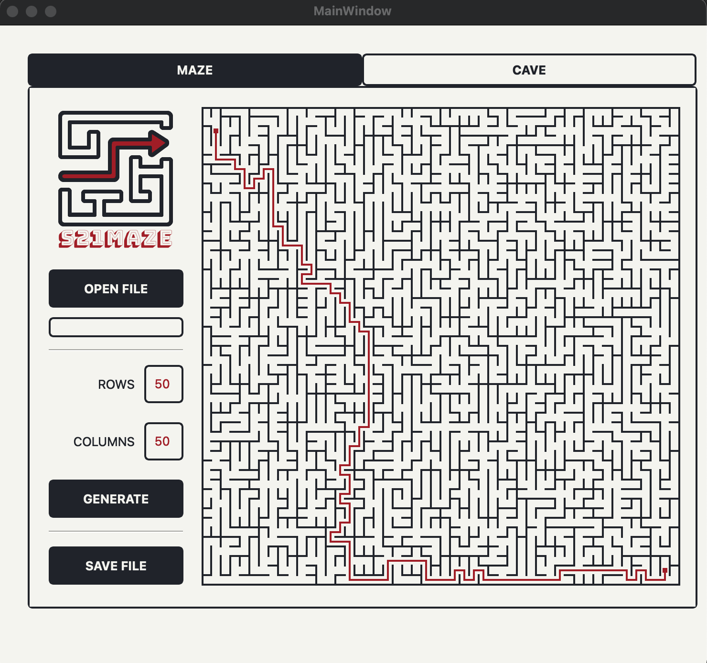
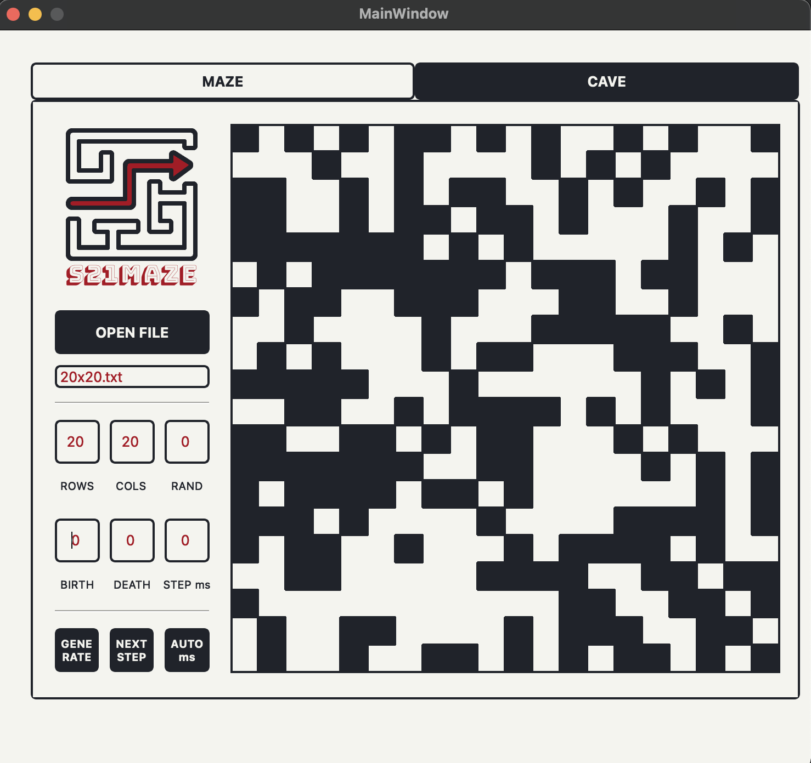

Реализация Maze
Общая информация
Программа Maze, позволяет генерировать и отрисовывать идеальные лабиринты и пещеры.
Лабиринты и пещеры отрисовываются на экране в поле размером 500 x 500 пикселей.
Максимальный размер 50 х 50 ячеек.
Лабиринты

В программе предусмотрена кнопка для загрузки лабиринта из файла.
Файл хранит количество строк и столбцов, а также две матрицы,
содержащие положение вертикальных и горизонтальных стен соответственно.
В первой матрице отображается наличие стены справа от каждой ячейки, а во второй - снизу.
Также есть возможность автоматической генерации идеального лабиринта.
Идеальный лабиринт генерируется согласно алгоритму Эллера.
Не имеет изолированных областей и петель.
В программе добавлена возможность показать решение любого лабиринта, который сейчас изображен на экране.
Пользователю необходимо задать начальную и конечную точки, чтобы решить лабиринт.
Сгенерированный лабиринт можно сохранить в файл с помощью соответствующей кнопки.
Пещеры

В программе реализована возможность генерировать пещеры с использованием клеточного автомата.
Пользователем задаются пределы "рождения" и "смерти" клетки, а также шанс на начальную инициализацию клетки.
Предусмотрен пошаговый режим отрисовки результатов работы алгоритма в двух вариантах: пошаговый и автоматический.
Автоматический режим запускает отрисовку итераций работы алгоритма с частотой 1 шаг в N миллисекунд,
где число миллисекунд N задаётся через специальное поле в пользовательском интерфейсе.